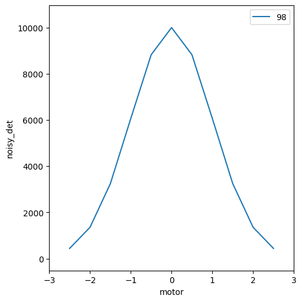

Demo: Notebook Startup¶
[1]:
from instrument.startup import * # noqa
I Tue-12:58:01.529: **************************************** Bluesky Startup Initialized
Below are the IPython logging settings for your session.
These settings have no impact on your experiment.
Activating auto-logging. Current session state plus future input saved.
Filename : /home/prjemian/Documents/projects/prjemian/model_instrument/docs/source/.logs/ipython_log.py
Mode : rotate
Output logging : True
Raw input log : False
Timestamping : True
State : active
W Tue-12:58:01.926: APS DM setup file does not exist: '/home/dm/etc/dm.setup.sh'
Exception reporting mode: Minimal
End of IPython settings
I Tue-12:58:03.043: Databroker catalog: temp
I Tue-12:58:03.120: RunEngine metadata saved in directory: /home/prjemian/.config/Bluesky_RunEngine_md
I Tue-12:58:03.122: using ophyd control layer: 'pyepics'
I Tue-12:58:03.184: SPEC data file: /home/prjemian/Documents/projects/prjemian/model_instrument/docs/source/20241015-125803.dat
[2]:
# import some plans with simulators from the test suite
from instrument.tests.sim_plans import sim_count_plan
from instrument.tests.sim_plans import sim_print_plan
from instrument.tests.sim_plans import sim_rel_scan_plan
[3]:
RE(sim_print_plan())
sim_print_plan(): This is a test.
sim_print_plan(): motor.position=0 noisy_det.read()=OrderedDict({'noisy_det': {'value': 1.0991492961410196, 'timestamp': 1729015083.0380905}}).
[3]:
()
[4]:
RE(sim_count_plan())
Transient Scan ID: 97 Time: 2024-10-15 12:58:03
Persistent Unique Scan ID: '6dc38cb1-7832-4de3-8460-687795e9ce3e'
New stream: 'primary'
+-----------+------------+------------+
| seq_num | time | noisy_det |
+-----------+------------+------------+
| 1 | 12:58:03.2 | 10000.084 |
+-----------+------------+------------+
generator count ['6dc38cb1'] (scan num: 97)
[4]:
('6dc38cb1-7832-4de3-8460-687795e9ce3e',)
[5]:
RE(sim_rel_scan_plan())
sim_rel_scan_plan(): motor.position=0.
sim_rel_scan_plan(): noisy_det.read()=OrderedDict({'noisy_det': {'value': 10000.083967469182, 'timestamp': 1729015083.2474928}}).
sim_rel_scan_plan(): noisy_det.read_configuration()=OrderedDict({'noisy_det_Imax': {'value': 10000, 'timestamp': 1729015083.3625894}, 'noisy_det_center': {'value': 0, 'timestamp': 1729015083.363047}, 'noisy_det_sigma': {'value': 1, 'timestamp': 1729015083.363231}, 'noisy_det_noise': {'value': 'uniform', 'timestamp': 1729015083.3636312}, 'noisy_det_noise_multiplier': {'value': 0.1, 'timestamp': 1729015083.0378728}}).
sim_rel_scan_plan(): noisy_det.noise._enum_strs=('none', 'poisson', 'uniform').
Transient Scan ID: 98 Time: 2024-10-15 12:58:03
Persistent Unique Scan ID: '77e29df9-cf62-479a-a52e-74c10a8b81c6'
New stream: 'primary'
+-----------+------------+------------+------------+
| seq_num | time | motor | noisy_det |
+-----------+------------+------------+------------+
| 1 | 12:58:03.3 | -2.500 | 439.276 |
| 2 | 12:58:03.4 | -2.000 | 1353.271 |
| 3 | 12:58:03.4 | -1.500 | 3246.571 |
| 4 | 12:58:03.5 | -1.000 | 6065.359 |
| 5 | 12:58:03.5 | -0.500 | 8825.029 |
| 6 | 12:58:03.6 | 0.000 | 10000.018 |
| 7 | 12:58:03.6 | 0.500 | 8824.998 |
| 8 | 12:58:03.7 | 1.000 | 6065.233 |
| 9 | 12:58:03.7 | 1.500 | 3246.547 |
| 10 | 12:58:03.7 | 2.000 | 1353.260 |
| 11 | 12:58:03.8 | 2.500 | 439.443 |
+-----------+------------+------------+------------+
generator rel_scan ['77e29df9'] (scan num: 98)
[5]:
('77e29df9-cf62-479a-a52e-74c10a8b81c6',)
